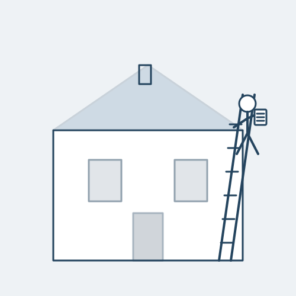

Byrne & Co specialises in Level 1, Level 2 (HomeBuyer) and Level 3 (Full Building) Surveys for homeowners and buyers across Greater London — carried out in person by RICS chartered surveyors who know the housing stock street by street.
Not sure whether you need a Level 2 or Level 3 survey? Read our full guide to choosing between them, or ask us directly — free of charge.
A visual-only inspection with traffic-light condition ratings. Suits newer, conventional properties in good condition where you want a quick, independent check before exchanging.
Detailed condition ratings with an optional market valuation. The right choice for standard homes under around 50 years old, built from common materials, in reasonable condition.
Full structural inspection with defect causes and repair advice. Recommended for period properties, homes that have been altered, or anywhere you plan to renovate — the majority of London's housing stock.

Getting a survey estimate takes less than two minutes, and you'll deal with the same surveyor from booking through to the follow-up call.
"Thorough Level 3 report on a Victorian terrace in Clapham. Picked up damp issues our mortgage valuation completely missed."
"Fast, professional, and the surveyor talked us through the report on site. Highly recommend for anyone buying in London."
"Clear pricing, no hidden fees, and the report was delivered in 4 days. Exactly what we needed before exchange."
Tell us about your property and one of our RICS chartered surveyors will get back to you within one working day.
Request a Free Estimate